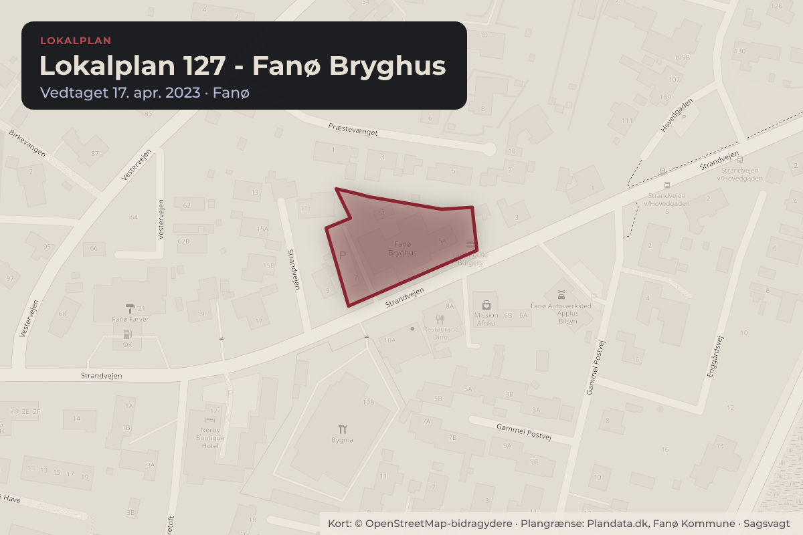
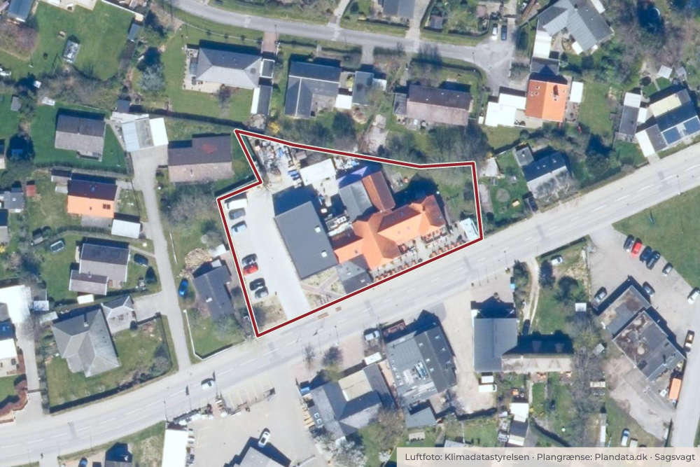

Besluttet 23. november, Teknikudvalget, Fanø
Lokalplan 127.1, Fanø Bryghus - endelig vedtagelse efter høring

Kort: © OpenStreetMap-bidragydere. Plangrænse: Plandata.dk, Fanø Kommune.

Kort fortalt
- Hvem
- Teknikudvalget, Fanø Kommune
- Hvornår
- Mandag 23. november 2026
- Status
- Besluttet. Teknikudvalget indstiller til Økonomiudvalget, at lokalplanforslaget ikke vedtages på det foreliggende grundlag, og opfordrer til yderligere dialog med Fanø Bryghus.
Er noget forkert her? Skriv til os
Læs hele sagen Kommunens egen tekst
Indstilling
Direktionen indstiller, at lokalplan 127.1. vedtages, herunder at der foretages ændringer af
planforslaget i overensstemmelse med henvendelse fra Fanø Bryghus.
Sagsfremstilling
På mødet i byrådet den 17. august 2026 blev det besluttet at lægge forslag til lokalplan 127.1 for
Fanø Bryghus ud i offentlig høring.
Efterfølgende er sagen behandlet på et møde i Teknikudvalget den 26. oktober 2026. På mødet
besluttede udvalget at udsætte sagen og bad
forvaltningen om at drøfte nogle bekymringspunkter i relation til nærområdet med Fanø
Bryghus.
Forvaltningen har drøftet lokalplanforslaget med ansøger på et par møder, og denne har
efterfølgende opsummeret sine bemærkninger i mails. Vedhæftet denne sag som bilag 1 er
mailkorrespondance med Fanø Bryghus, der indeholder både konkrete tiltag i relation til
plangrundlaget og mere overordnede betragtninger i skrivelsen fra bryghuset.
Justering af lokalplanen
I direkte relation til lokalplanen har ansøger foreslået følgende justeringer:
§ 7.3 – Begrænsning af arealet til madservering
I det foreliggende ændringsforslag fremgår følgende: ”Der må opføres maks. 30 m² i det
skraverede byggefelt på kortbilag 2 til food truck/bygning med salg af mad.”
Dette ændres til ”Der må opføres maks. 20 m² i det skraverede byggefelt på kortbilag 2 til food
truck/bygning med salg af mad.”
Ved at reducere det maksimalt tilladte areal fra 30 m² til 20 m² sikres det, at lokalplanændringen
ikke giver mulighed for en væsentlig udvidelse af de eksisterende fysiske rammer for Lighthouse
Burgers.
Forslaget understøtter dermed en intention om alene at lovliggøre den nuværende opstilling
frem for at skabe grundlag for en udvidelse.
§ 7.4 – Bestemmelser om sekundær bebyggelse
I det foreliggende ændringsforslag fremgår følgende: ”Opførelse af sekundær bebyggelse må
ikke ske med større højde end vist på tegningen nedenfor, og facaden må ikke være længere end
12 m inden for 2,5 m fra skel.”
Dette ændres til ”Opførelse af sekundær bebyggelse skal ske i overensstemmelse med de til
enhver tid gældende bestemmelser i bygningsreglementet (BR18) herom.”
Lovgrundlag, planer og politikker
Lokalplan 127.1
Økonomiske konsekvenser
Ikke relevant.
Beslutning
Teknikudvalget indstiller til Økonomiudvalget, at lokalplanforslaget ikke vedtages på det
foreliggende grundlag, og opfordrer til yderligere dialog med Fanø Bryghus.
Kilde: Fanø Kommune, Teknikudvalget, referat fra mødet mandag 23. november 2026, punkt 5. Læs den originale sag hos kommunen.